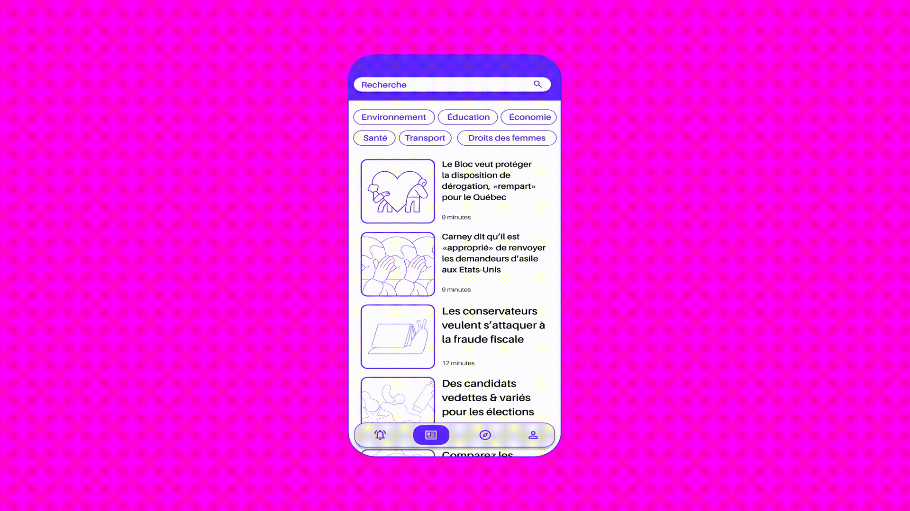

Compas is a speculative, civic engagement app exploring how interface design can make political participation more approachable for young voters.
Growing up interested in politics led me to complete a master's degree in Political Science, where I worked within the Canada Research Chair on Electoral Democracy. One question kept resurfacing throughout the literature: why do so many young Canadians choose not to vote?
Five years down the line, I am adressing this very issue in the context of my Bachelor's degree in Graphic Design and Visual Experiences. For my first year UX/UI final project, I wanted to revisit that question from a designer's perspective.
Rather than asking how to convince people to vote, my colleagues Alicia, Chloe, Marie-Jeanne and I explored how design could reduce the barriers that often prevent young people from engaging with politics in the first place.
Existing tools such as YouCount and electoral matching platforms are valuable, but their interfaces often feel institutional, information-heavy, and difficult to sustain engagement with. Research consistently suggests that political interest develops through repeated, low-friction exposure, as opposed to a single, lengthy questionnaire.
This observation became the foundation of Compas.
Compas reimagines political literacy as an experience that grows over time. Instead of completing a one-time ideological quiz, users browse a personalized stream of political news, organized by topics such as the environment, the economy, and social issues. After reading each article, they simply indicate where they stand on the issue. As interactions accumulate, the application progressively refines an accessible visualization of their political positioning while encouraging curiosity rather than prescribing affiliations.
An important design decision was to remove the visible source of each article during the reading experience. This allowed users to engage with ideas before reacting to the perceived bias or reputation of a publication, encouraging reflection on the content itself.

Accessibility and inclusivity also informed the visual identity. I designed the logotype using Amiamie by Bye Bye Binary, whose inclusive design philosophy aligned naturally with the project's goals. The symbol combines a ballot checkbox with a smiling face, surrounded by arrows pointing in every direction to evoke a compass—suggesting exploration instead of certainty.
Beyond the visual identity, I led the project's conceptual direction, drawing from my academic research to define the problem space and guide the overall UX strategy. The result is a speculative proposal that asks a broader question:
Can interface design cultivate political curiosity before asking for political commitment?

Credits
Brand identity: Victor Percoco
UX Strategy: Chloe Yoshino
Production: Alicia Melançon
Motion: Marie-Jeanne Dufresne
Sources
Blais, André, et al. "Where Does Turnout Decline Come From?" European Journal of Political Research, vol. 43, no. 2, 2004, pp. 221-236. Wiley Online Library.
Blais, André, et al. "La participation électorale." Les Québécois aux urnes, edited by Frédérick Bastien et al., Presses de l'Université de Montréal, 2013, pp. 179-202.
Dubois, P., & Gélineau, F. (2021). Les motifs de la participation électorale aux élections municipales québécoises: Le cas de 2017. Chaire de recherche sur la démocratie et les institutions parlementaires